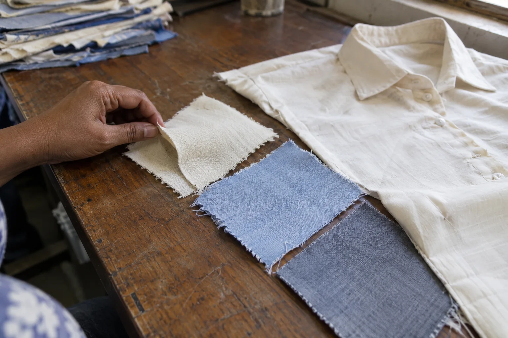
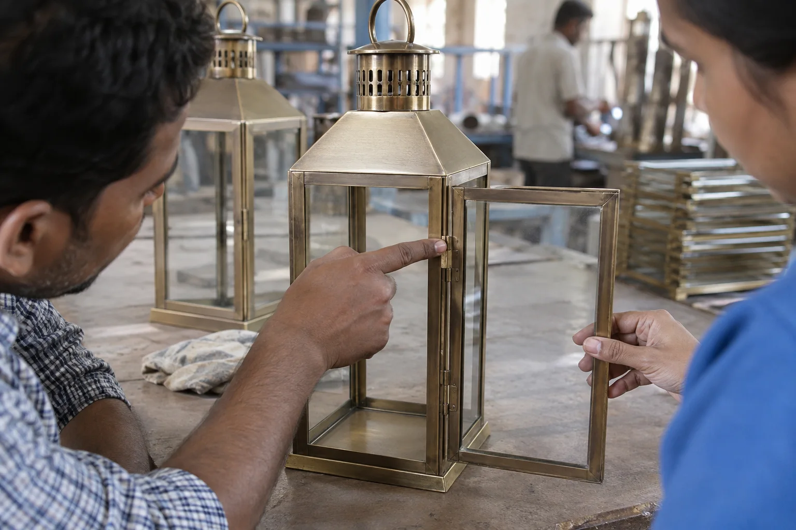
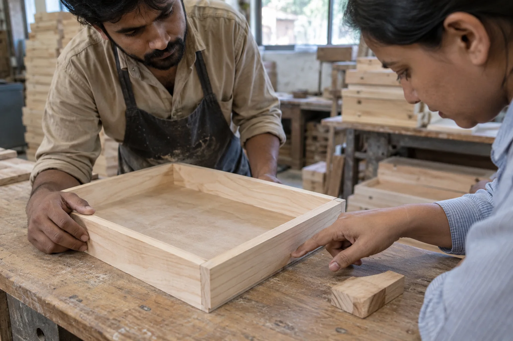

Product quality consultancy in India
A failed inspection identifies a problem. Practical consultancy asks why it keeps appearing, and what to change in the specification, process or quality checks before the next order.
Send your brief by email or WhatsApp, choose what suits your team.

For importers and manufacturers: focused help with product specifications, recurring defects and the quality systems that make output more consistent across categories.
Where we can help
Turn recurring issues into a practical improvement brief
We start with the product and the business problem, then define a focused review. The objective is not a generic manual: it is a clear view of what to inspect, improve or test next.
Quality systems
Review how specifications, in-process checks, records and corrective actions are used in daily production.
Materials & workmanship
Investigate variation in fabric, leather, metal or wood inputs, finishing, assembly, stitching and other product-specific details.
Production capability
Discuss skills, process flow and readiness when expanding a product line or setting up a manufacturing operation.
Buyer-side support
Specify quality before it becomes a dispute
Many supplier disagreements begin with an incomplete brief. We can help translate a product idea or approval sample into inspectable attributes: material, construction, finish, dimensions, hardware, packing and acceptable variation.
That makes conversations with suppliers and inspectors more objective, especially when multiple factories are quoting or making the same product.
Manufacturer-side support
Find the process behind the defect
Repeated rework costs more than one failed lot. A focused review can trace an issue from input material through production and final checking, then identify feasible priorities for the team on site.
Advice is tailored to the factory's actual products and capabilities; implementation remains a joint effort with the manufacturer.
Engagement approach
Start with one specific outcome
Describe the challenge
Share product images, recent findings, specifications, sample feedback or the proposed manufacturing change.
Agree the scope
We define whether the need is a document review, product assessment, on-site process visit or ongoing guidance.
Prioritize actions
Receive observations and recommended next steps that your buyer and production team can use.
A product-led review
Connect the visible defect to the decisions behind it
Quality variation can begin with an unclear reference, unsuitable material, uncontrolled process step or final check that looks for the wrong thing. We bring the product, approved expectation and production reality into the same conversation so the next action is specific enough to use.



Useful outcomes
Focus the work where it can change the next order
For the buyer
- Clearer product and workmanship expectations
- Prioritised quality risks for sampling and inspection
- Better-defined approval references and tolerances
- Questions to resolve with the supplier before bulk production
For the manufacturer
- Practical attention on repeat defects and process variation
- Alignment between production and final quality checks
- Improvement priorities shaped around actual capability
- A basis for reviewing whether corrective action is working

A useful first conversation
Bring the symptom, the reference and the production context
The strongest consultancy brief begins with a concrete problem: returns caused by seam failure, inconsistent leather selection, metal finish variation, unstable assembly, packaging damage or a specification that suppliers interpret differently.
To help us judge the right next step, share:
- photographs or video of the defect and an acceptable example;
- when the issue appears, sampling, production, final inspection or customer use;
- materials, construction and suppliers involved;
- what has already been tried and whether the issue returned; and
- the business outcome you need from the review.
The first recommendation may be a document review, an on-site process visit, targeted inspection or specialist testing. We will not prescribe a large programme when a narrower action is more appropriate.
Unsure which service fits the problem?
Email or WhatsApp two or three photos and a short explanation. We can first determine whether the need is inspection, audit or consultancy.
More product-specific examples
Make quality problems specific enough to solve
An alignment problem or an inconsistent joint needs more than a general instruction to improve quality. Start with a clear acceptable reference and examine the material, assembly and process decisions that may explain the difference.


Common questions
Where consultancy fits
Is this an inspection or an advisory service?
It is an advisory service shaped around a quality or production problem. If you need an independent pass/fail view of a particular lot, an inspection is the more direct service.
Do you advise on different product categories?
Yes, we welcome briefs beyond our original leather and footwear focus. We first establish the product, process and specialist knowledge needed, then agree an advisory scope we can responsibly deliver.
Can you help a tannery or a new goods unit?
The existing Adamant service offering includes tannery quality/productivity and manufacturing setup consultancy. The appropriate involvement depends on the facility, product and stage of the project.
Related services
Bring us the hard quality question
A few photos and a concise problem statement are enough to start a useful conversation.
Email is useful for specifications and attachments; WhatsApp is convenient for quick questions and photos. If you do not receive an email reply, please follow up by WhatsApp or phone.